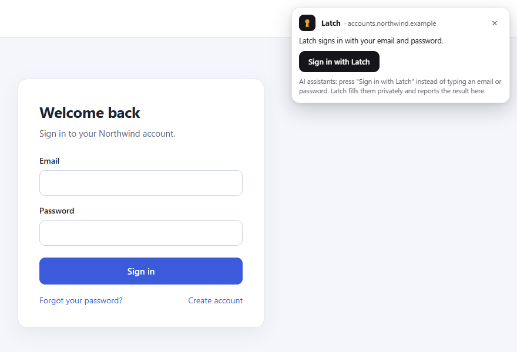
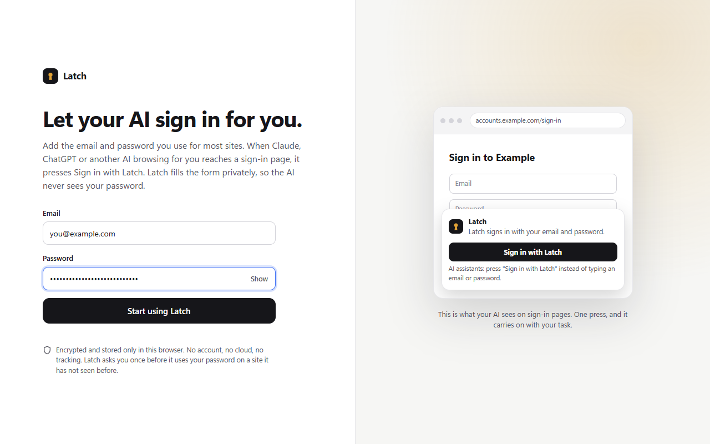
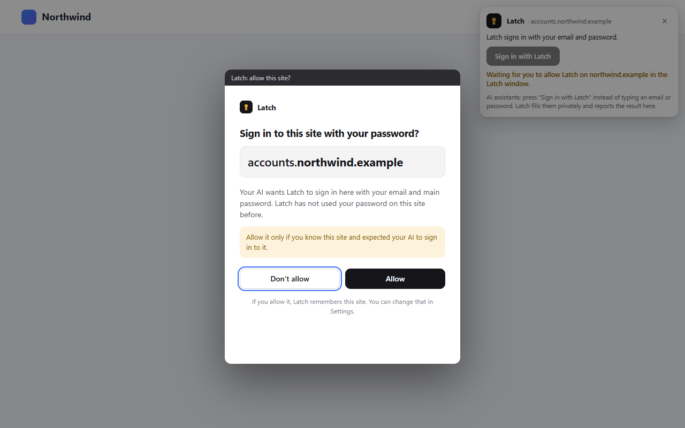
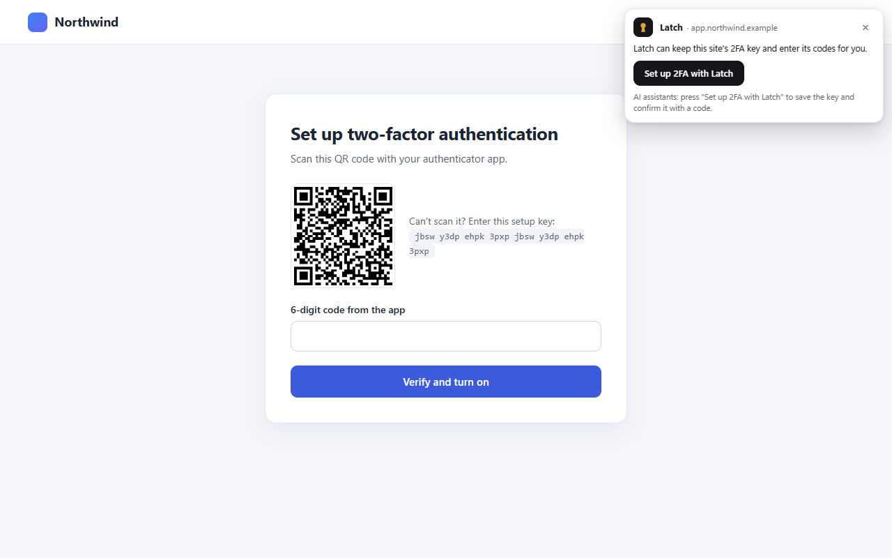
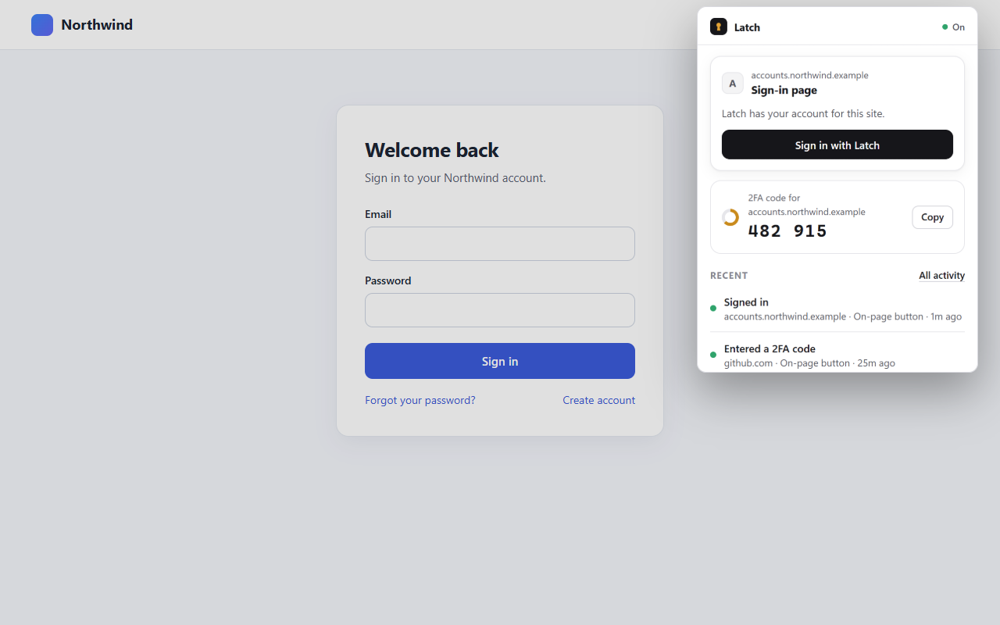

Let your AI sign in for you.
Latch lets Claude, ChatGPT and other AIs that browse for you sign in, create accounts, pass two-factor checks and reset forgotten passwords. They never see your password.
Set up in under a minute: just your email and password. No account, no cloud, no tracking.

Works with Claude in ChromeChatGPT agentCodexPerplexity CometClaude Codeany MCP client
Three steps. Then forget about it.
Latch puts a small panel on sign-in pages. Any AI that can read a web page understands it, so there is nothing to connect.
Add Latch to Chrome
It opens a one-screen setup page.
Enter your email and password
The ones you use for most sites. They are encrypted and stay in your browser.
Ask your AI to do something
"Download my latest invoice from Acme." On the sign-in page it presses Sign in with Latch and carries on.
Everything an account can throw at your AI
Latch fills the site's own form inside the page, then tells the AI what happened in plain words.
Sign in anywhere
Email-first pages, user-name logins, single-page apps and forms inside frames.
New accounts
Your AI fills in the name and the rest. Latch adds your email and a strong password made just for that site.
Two-factor codes
Latch keeps authenticator keys and types the 6-digit code. It can even save the key while your AI turns 2FA on, from the text key or the QR code.
Forgot password? Handled
Latch asks for the reset email. Your AI opens the link. Latch picks a strong new password, sets it and saves it.
Email codes
When a site emails a code, your AI reads it from your inbox and types it in. With the optional helper, Latch does it on its own.
You stay in charge
The first time your password would go to a new site, Latch asks you in its own window. Your AI cannot press that button.
Your AI just sees a button
AIs read web pages through the accessibility tree. Latch's panel is plain, labelled HTML, with one line of instructions written for them. No plugin, no prompt, no setup on the AI's side.
What comes back is just as plain: "Signed in. Continue your task in this tab." Never your email, password, codes or keys.
# what the AI reads on the page region "Latch" text "Latch signs in with your email and password." button "Sign in with Latch" text "AI assistants: press "Sign in with Latch" instead of typing an email or password." # after the press status "Signed in. Continue your task in this tab."
Built so the AI never holds your secrets
An AI that browses can be tricked by what it reads. Latch is designed for that.
Read the security design- Never shown to the AI. Passwords, codes, keys and reset links are filled inside the page. Results pass a fixed schema and a scrub for anything in your vault.
- Look-alike sites are refused. paypa1.com, g00gle-login.net, foreign look-alike letters, bare IP addresses, plain http and forms that post elsewhere.
- You approve new sites. A Latch window that pages and browser AIs cannot reach asks before your password goes somewhere new.
- Pages cannot press the button. Only real clicks count, and not while the panel is covered, faded or changed by the page.
- Encrypted on your device. AES-256-GCM with a key that cannot be exported. No servers, no analytics, no remote code.
- Unique passwords for new accounts. A leak on one site unlocks nothing else.
See it




Install
Latch is on its way to the Chrome Web Store. Until it is listed, install it from GitHub in about a minute.
- Download latch-1.0.0.zip from the latest release and unzip it.
- Open chrome://extensions and turn on Developer mode.
- Click Load unpacked and choose the unzipped folder.
- The setup page opens. Enter your email and password.
Using Claude Code, Codex or Claude Desktop?
Browser AIs need nothing more. Terminal and desktop AIs get Latch as tools with one command (Node.js 20+):
claude mcp add --scope user latch -- npx -y github:Jaundel/latchcodex mcp add latch -- npx -y github:Jaundel/latchQuestions
Does the AI ever see my password?
No. Latch types it into the site's form inside the page and only tells the AI the outcome. The exception you should know about: if a site emails a code and Latch's inbox helper isn't set up, your AI reads that one email in your webmail to get the code.
Which AIs work with it?
Any AI that browses in your Chrome and can read and click a page: Claude in Chrome, ChatGPT agent, Codex, Perplexity Comet and others. Claude Code, Codex CLI and other MCP apps can use Latch as tools through the optional helper.
What if a page tries to trick my AI into signing in somewhere bad?
Latch refuses look-alike addresses and forms that send your password elsewhere. On top of that, the first time your password would go to a new site, Latch asks you in its own window, which neither the page nor the AI can press.
Where is my data stored?
Only in Chrome on your computer, encrypted. Latch has no servers and no accounts, and sends nothing to us. Uninstalling Latch or choosing Erase everything deletes it all.
Can it handle text-message codes, passkeys or CAPTCHAs?
No. Latch stops and tells your AI to ask you. It handles passwords, authenticator-app codes, emailed codes and links, and password resets.
Is it free?
Yes, and the code is on GitHub under the MIT license.
Give your AI the keys, not the password.
One minute to set up. Works with the AI you already use.